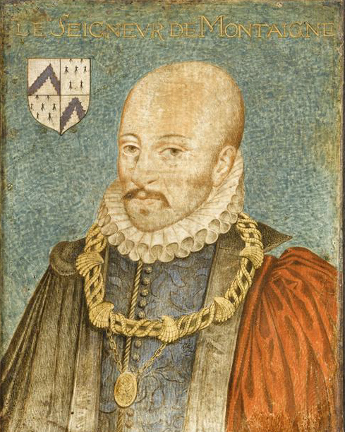
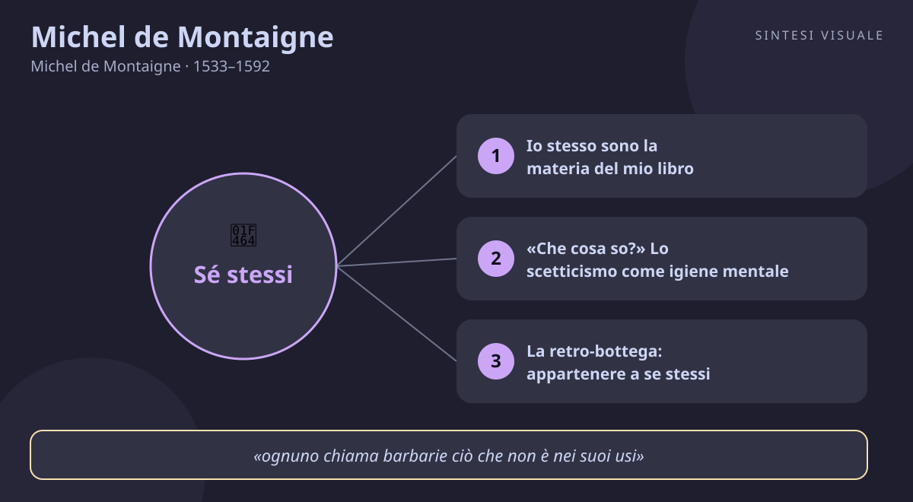

Home / Filosofi / Michel de Montaigne

Michel de Montaigne
Michel de Montaigne · 1533–1592
«La più grande cosa del mondo è saper appartenere a se stessi»
- Scetticismo
- Solitudine
- Io
- Tolleranza
💬La massima
«La più grande cosa del mondo è saper appartenere a se stessi.»
— Saggi (Essais), Libro I, capitolo 39, «Della solitudine» (De la solitude), 1580 (in francese: «La plus grande chose du monde, c'est de savoir être à soi»)
La frase sta nel cuore del capitolo sulla solitudine, ed è molto più radicale di un invito a «staccare la spina». Montaigne parte da un'immagine bellissima: ognuno dovrebbe tenere dietro la bottega della vita pubblica una arrière-boutique, una «retro-bottega» tutta per sé — uno spazio interiore dove ritirarsi, pensare, fare i conti con se stessi. Attenzione: non è fuga dal mondo, né egoismo. Montaigne fu magistrato, sindaco di Bordeaux, diplomatico tra cattolici e ugonotti: visse la vita pubblica fino in fondo. Il punto è un altro: se non possiedi te stesso, ogni ruolo ti possiede. Il politico diventa la sua carica, l'imprenditore il suo fatturato, il genitore i suoi figli, l'utente dei social i suoi «mi piace». Appartenere a se stessi significa mantenere una stanza interna dove nessun padrone entra — non il re, non la moda, non l'ansia di piacere. È la condizione di ogni libertà: chi sa stare da solo con i propri pensieri non può essere ricattato né dal successo né dal giudizio altrui. Ed è anche la condizione di ogni relazione sana: solo chi appartiene a se stesso può donarsi agli altri senza perdersi.
👤Biografia
Michel Eyquem nasce il 28 febbraio 1533 nel castello di Saint-Michel-de-Montaigne, in Dordogna, da una famiglia di mercanti bordolesi arricchiti e da poco nobili: la madre, Antoinette de Louppes, è di origine ebraico-spagnola convertita. Il padre Pierre, humanista entusiasta, gli impone un'educazione straordinaria: fino ai sei anni il bambino parla solo latino, con un precettore tedesco che non conosce il francese. Studia poi al collegio di Guyenne a Bordeaux e a Tolosa, e intraprende la carriera di magistrato: dal 1557 è consigliere al Parlamento di Bordeaux, mestiere che fa con scrupolo ma senza passione, in anni in cui i tribunali giudicano anche eretici destinati al rogo — esperienza che lo segna.
Il suo grande incontro umano è Étienne de La Boétie, collega e scrittore, con cui nasce un'amicizia fulminea e assoluta; La Boétie muore di dissenteria nel 1563, a 32 anni, e Montaigne non se ne riprenderà mai: «perché era lui, perché ero io». Nel 1565 sposa Françoise de La Chassaigne, da cui avrà sei figli, di cui sopravvive solo la secondogenita Léonor. Nel 1570, a 37 anni, vende la carica di magistrato e si ritira nella torre del castello, dove fa dipingere sul soffitto della libreria le sue frasi guida, a cominciare da Que sais-je? — «Che cosa so?». Lì scrive i Saggi, pubblicati nel 1580; poi viaggia per due anni in Germania, Svizzera e Italia per curare i calcoli renali che lo tormentano e osservare gli uomini. Eletto sindaco di Bordeaux nel 1581, ricopre la carica per quattro anni con onestà e moderazione, in piena guerra civile religiosa. Muore il 13 settembre 1592, a 59 anni, nella sua torre, durante una messa celebrata in camera da letto. Curioso infaticabile, ipocondriaco ironico, conversatore irresistibile: un uomo che fece della propria vita incerta il più onesto degli esperimenti.
📌Sintesi del pensiero
Montaigne è il padre del saggio moderno e il maestro dello scetticismo gentile: mette se stesso sotto il microscopio per capire l'uomo in generale. Non costruisce sistemi — «Io stesso sono la materia del mio libro», dichiara — ma osserva, dubita, racconta, corregge. Il suo pensiero è un esercizio continuo di onestà intellettuale: sospendere il giudizio, accettare l'incertezza, abitare il proprio corpo e il proprio tempo senza maschere. In un secolo di fanatici sicuri di possedere la verità, insegna che il dubbio non è debolezza ma civiltà.
🏛️I temi fondamentali
- Io stesso sono la materia del mio libro. La rivoluzione di Montaigne sta nell'oggetto di studio: non Dio, non la natura, ma Michel. «Io dipingo il passaggio», scrive: non un ritratto fisso, ma il movimento di un uomo che cambia. Racconta il suo sonno, la sua memoria corta, le sue coliche renali, il suo amore per i cavalli, il fastidio per le cerimonie. È un metodo: conoscendo a fondo un solo esemplare — sé — si impara qualcosa di ogni uomo. Esempio concreto: quando descrive come rimanda sempre le lettere importanti, non fa confessione vanitosa; mostra il meccanismo universale della procrastinazione tre secoli prima degli psicologi.
- «Che cosa so?» Lo scetticismo come igiene mentale. Il motto inciso sulle travi della torre, Que sais-je?, accompagnato da una bilancia in equilibrio, riassume tutto: di fronte alle guerre tra chi dice di possedere la verità assoluta, Montaigne sospende il giudizio. Ha letto la riscoperta di Pirrone e di Sesto Empirico: la ragione umana è fragile, i sensi ingannano, le opinioni cambiano con la latitudine — «quale verità è delimitata da queste montagne ed è menzogna nel mondo al di là?». Lo scetticismo non è paralisi: è il rifiuto di uccidere e morire per opinioni incerte. In pratica: prima di indignarti, chiediti quanto sai davvero della faccenda.
- La retro-bottega: appartenere a se stessi. È la massima di oggi, sviluppata nel capitolo «Della solitudine». Ognuno deve riservarsi «una stanza tutta per sé, dove stabilire la nostra vera libertà». Montaigne distingue la solitudine fisica — ritirarsi in campagna — da quella interiore, che si può praticare anche a corte: non legarsi con passione servile a cariche, ricchezze, favori. Il suo esempio è concreto: da sindaco trattava gli affari della città con cura, ma «senza dimenticarsene né affliggersene» oltre il dovere; finita la giornata, tornava ai suoi libri e ai suoi pensieri. È l'antidoto all'identificazione totale con il ruolo che ci divora ancora oggi.
- Il corpo, le abitudini, il quotidiano. Contro secoli di filosofia che disprezzava la carne, Montaigne riporta il corpo al centro: mangiare, dormire, digerire, invecchiare, ammalarsi sono materia filosofica. «Chi teme di soffrire», osserva, soffre già; meglio frequentare il proprio corpo con familiarità che temerlo da lontano. Celebre la sua abitudine di «assaggiare» tutto su di sé prima di giudicare: i suoi calcoli renali diventano un maestro di pazienza. E l'abitudine — la coutume — è per lui una seconda natura potentissima: ci fa sembrare naturali usanze assurde solo perché ci siamo nati dentro. Capirlo è il primo passo per giudicare con indulgenza i popoli lontani.
- I cannibali e la tolleranza: il relativismo gentile. Nel saggio «Dei cannibali» (I, 31), partendo dai racconti sui Tupinamba del Brasile, Montaigne rovescia il tavolo: i veri barbari siamo noi, che torturiamo i vivi in nome della religione mentre quei popoli mangiano i morti in nome dell'onore. «Ognuno chiama barbarie ciò che non è nei suoi usi.» Non idealizza i cannibali — resta un gentiluomo del Cinquecento — ma usa lo specchio lontano per smascherare la crudeltà vicina: i roghi, le torture, i massacri delle guerre di religione. È la nascita dello sguardo antropologico: giudicare una cultura richiede prima di sospendere i propri pregiudizi.
📚Le opere principali
- Saggi (Essais), 1580; edizione ampliata 1588. Unico vero libro della sua vita, in continua riscrittura: 94 capitoli nel 1580, 107 nel 1588, più le aggiunte manoscritte trovate dopo la morte. Tesi centrale: l'uomo — questo io mutevole — può essere conosciuto solo raccontandosi senza maschere. Conta perché inventa un genere, il saggio personale, e un metodo, l'introspezione onesta: da qui discendono l'autobiografia moderna, il diario filosofico e, in fondo, ogni blog sincero.
- Giornale di viaggio in Italia (Journal de voyage), scritto nel 1580-1581, pubblicato solo nel 1774. Resoconto del viaggio termale e curioso attraverso Germania, Svizzera e Italia, dettato in parte al segretario. Tesi centrale: osservare gli usi altrui per relativizzare i propri — dalle terme tedesche alle messe romane, tutto è annotato con la stessa attenzione partecipe. Conta perché mostra Montaigne «sul campo»: tollerante con ogni costume, attentissimo al corpo e ai dettagli, già antropologo senza saperlo.
💬Massime celebri
«Che cosa so? (Que sais-je?)» — motto inciso sulle travi della torre-libreria, ripreso in tutto il Libro I dei Saggi. Conta perché è il manifesto dello scetticismo gentile: tre parole che disarmano ogni fanatismo, compreso il nostro.
«Filosofare è imparare a morire (Que philosopher, c'est apprendre à mourir)» — Saggi, I, 20 (XIX in alcune edizioni antiche), 1580, dal detto di Cicerone. Conta perché rovescia la paura: frequentare l'idea della morte con familiarità, dice Montaigne, libera la vita invece di avvelenarla.
«Io stesso sono la materia del mio libro (Je suis moi-même la matière de mon livre)» — «Al lettore» (Au lecteur), prefazione dei Saggi, 1580. Conta perché fonda la scrittura moderna dell'io: raccontarsi senza maschere non è vanità, è il contributo più onesto alla conoscenza dell'uomo.
⌛Contesto storico
Michel de Montaigne vive 59 anni nel secolo più sanguinoso della Francia moderna: nasce nel 1533, sotto Francesco I e lo splendore del Rinascimento, e muore nel 1592, mentre infuria l'ottava guerra di religione. La Francia in cui cresce è un paese spaccato in due dalla Riforma: da una parte i cattolici e la corona, dall'altra gli ugonotti calvinisti. Tra il 1562 e il 1598 si contano otto guerre civili; il 24 agosto 1572, con la notte di San Bartolomeo, migliaia di protestanti vengono massacrati a Parigi e nelle province. Montaigne, cattolico moderato e leale al re, attraversa gli schieramenti da mediatore: stimato da Enrico di Navarra (il futuro Enrico IV, protestante) come dai Guisa cattolici, usa la sua influenza per trattative e pacificazioni locali.
Intorno a lui, il mondo si allarga e si capovolge: la stampa a caratteri mobili diffonde libri e pamphlet in tutta Europa; le scoperte geografiche portano in Francia racconti e perfino nativi dal Brasile e dal Canada; Copernico (1543) ha appena spostato la Terra dal centro dell'universo. Bordeaux, la sua città, è un grande porto atlantico che commercia vino con l'Inghilterra e guarda all'oceano.
I movimenti che lo formano sono l'umanesimo — Erasmo, Rabelais, le traduzioni di Plutarco di Amyot che legge senza posa — e lo scetticismo antico riscoperto, Pirrone e Sesto Empirico, innestati sullo stoicismo di Seneca e Lucrezio. Da parte sua, Montaigne trasmette un'eredità immensa: il dubbio metodico a Cartesio, la critica delle usanze a Montesquieu, l'io narrante a Rousseau e all'autobiografia moderna, il saggio come forma a Bacon e a tutta la cultura europea.
🌊L'eredità
Difficile trovare un pensatore moderno che non abbia un debito con il gentiluomo della torre. Cartesio raccoglie il suo dubbio ma per superarlo: dove Montaigne si accomoda nell'incertezza, Cartesio vuole fondare certezze — eppure il Discorso sul metodo cammina sulla strada aperta dai Saggi. Pascal lo legge e lo annota febbrilmente: ammira la sua pittura dell'uomo fragile ma gli rimprovera di fermarsi lì, senza il salto verso Dio. Nel Settecento, Montesquieu impara da «Dei cannibali» l'arte del relativismo culturale nelle Lettere persiane, e Voltaire e Diderot celebrano in lui il nemico del fanatismo. Rousseau prende dai Saggi l'idea rivoluzionaria di raccontarsi intero nelle Confessioni, fondando l'autobiografia moderna. Nell'Ottocento, Emerson e Thoreau fanno di lui il santo patrono della fiducia in se stessi oltreoceano, mentre Nietzsche lo venera apertamente: «il fatto che un uomo simile abbia scritto ha accresciuto la gioia di vivere su questa terra». Nel Novecento, Stefan Zweig gli dedica una biografia appassionata scritta in esilio contro i nuovi fanatismi; Merleau-Ponty, Gide, Proust lo riconoscono come maestro di introspezione; Michel Foucault riprende la sua «cura di sé» come pratica di libertà. Ogni volta che qualcuno scrive «io» con onestà, Montaigne sorride dalla sua torre.
🌍Esempi di oggi
- Il manager che è solo il suo ruolo. Un dirigente in carriera controlla le e-mail a mezzanotte, parla solo di fatturato, non sa più dire cosa gli piace fare la domenica. Montaigne gli presterebbe la chiave della retro-bottega: servi pure la tua città — o la tua azienda — ma tieni una stanza interna dove tu esisti anche senza titolo. Chi appartiene a se stesso lavora meglio, e crolla meno quando il ruolo cambia.
- La lite da social che diventa odio. Sotto un post su un tema divisivo, decine di persone si insultano con certezze assolute, ciascuna convinta di possedere la verità. Il Que sais-je? di Montaigne sarebbe un secchio d'acqua fresca: sospendi un momento il giudizio, chiediti quanto sai davvero, riconosci che l'avversario ha «usi» diversi dai tuoi — come i cannibali del Brasile. Non significa rinunciare a pensare: significa rinunciare a odiare per opinioni.
- L'ansia del corpo che invecchia. Una persona di cinquant'anni nasconde i capelli bianchi, evita le foto, vive ogni acciacco come una vergogna. Montaigne, che conversava con i suoi calcoli renali e descriveva senza pudore sonno e digestione, ribatterebbe: il corpo non è il nemico dell'anima, è la sua casa. Frequentarlo con familiarità ironica invece di temerlo da lontano è l'inizio di ogni saggezza — e di molto buonumore.
📄
# Michel de Montaigne — «La più grande cosa del mondo è saper appartenere a se stessi»
Buongiorno! Oggi incontriamo il gentiluomo che inventò un genere letterario per guardarsi dentro: il nobile guascone che a 38 anni si chiuse in una torre piena di libri con una sola domanda in testa — «che cosa so?». Il ritratto qui sopra — il dipinto del 1578 circa conservato al Museo Condé di Chantilly, dove Montaigne porta il collare dell'Ordine di San Michele conferitogli da Carlo IX — lo mostra nel pieno della maturità, con quello sguardo tranquillo e ironico di chi ha smesso di fingere di avere certezze.
🧠Quiz
Metti alla prova quello che hai letto — rispondi in chat con es. 1B 2A 3C 4D 5A (usa «-» per le risposte che salti):
1 Da quale capitolo dei Saggi è tratta la massima di oggi?
2 Che cosa significa, per Montaigne, «saper appartenere a se stessi»?
3 Che cosa significa il motto Que sais-je?
4 Nel saggio «Dei cannibali», qual è la tesi di Montaigne?
5 Dove scrisse Montaigne i Saggi?
✅Soluzioni — tocca per vedere
1C – 2B – 3B – 4C – 5C
🔁Ripasso
- Retro-bottega e solitudine (I, 39): se hai sbagliato la 1 o la 2, ricorda che la solitudine di Montaigne è interiore, non fuga: si può praticare anche da sindaco. Il punto è non identificarsi col ruolo.
- Scetticismo e Que sais-je?: se hai sbagliato la 3, ricorda la bilancia della torre: sospendere il giudizio non è pigrizia, è l'antidoto al fanatismo delle guerre di religione (e delle liti di oggi).
- Cannibali e relativismo: se hai sbagliato la 4, ricorda la frase-chiave «ognuno chiama barbarie ciò che non è nei suoi usi»: lo specchio lontano serve a giudicare la crudeltà vicina.
🖼️In un colpo d’occhio

Tocca l’immagine per ingrandirla.